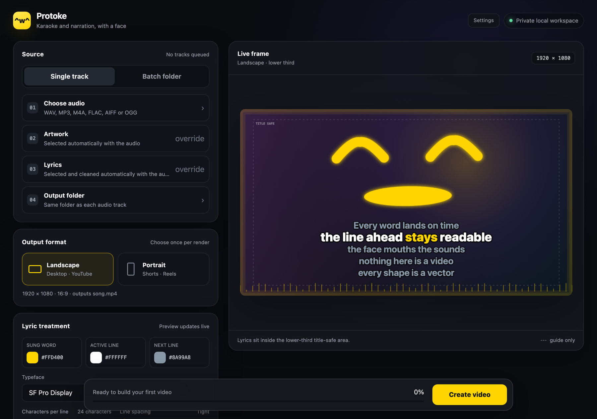
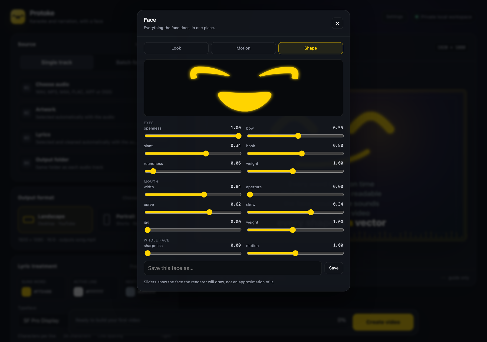
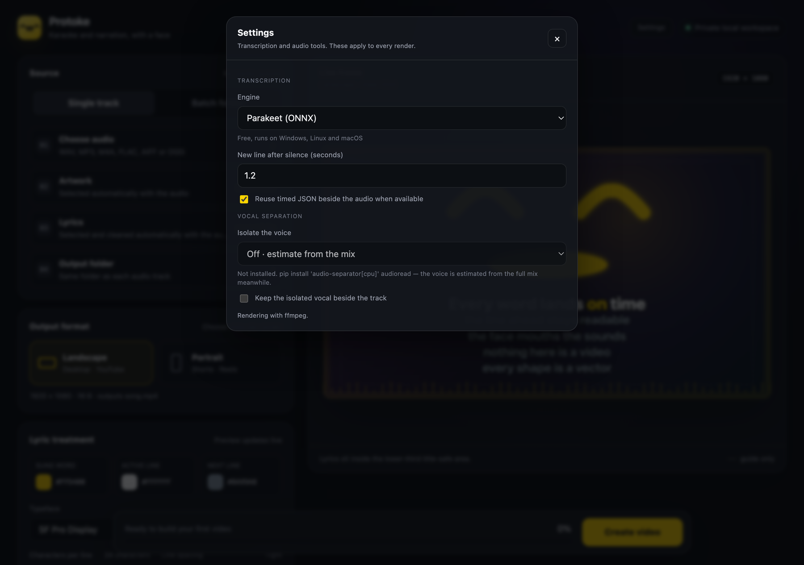

601
subtitle events drawing the face across those 28 seconds
proto + karaoke. A karaoke and narration renderer with a protogen visor face that mouths the words — drawn as vector outlines by the same subtitle pass that draws the lyrics, so there is no image sequence and no video layer to composite.
Twenty-eight seconds
The voice is synthetic, from a locally trained Piper model. The background is one black PNG that never changes. Every eye, every mouth shape and every word of text is a single libass pass over that still — no frames were animated, and nothing was composited.
27.5 seconds, 1920×1080, 1.7 MB. The mouth follows the words from their spelling; the eyes blink on their own schedule, roughly once every seven seconds. There is no beat in this recording, so the head breathes rather than nods — the tool measured that and said so in its log rather than inventing a tempo.
Why it works this way
The obvious way to put an animated face on a video is to render frames and composite them. That means an image sequence, an alpha channel, a second encoder pass, and a pile of intermediate files that all have to agree about size and frame rate.
ASS subtitles can draw filled vector shapes. libass is already in the ffmpeg command drawing the lyrics. So the face is emitted as drawing commands into a second subtitle track and burned in by the pass that was going to run anyway. One ffmpeg invocation, no intermediates, and the "animation" is a text file you can open and read.
The cost is that everything has to be expressible as outlines and timings, which turned out to be a useful constraint rather than a limit.
The face
Early versions swapped between fixed shapes and looked exactly like that: rigid, held together with tape. The fix was to stop picking expressions and start blending dial values, the way a protogen firmware blends morph weights.
Six numbers describe an eye — openness, bow, slant, hook, roundness, weight. Six more describe the mouth. Two describe the whole face. Every named expression is just a point in that space, and anything between two of them is a valid face, so a blink is a continuous move rather than a cut.
These are the renderer's own frames. The geometry was exported straight out of the Python that writes the subtitle track, so the page cannot drift from the videos — it has no drawing code of its own, only a replay loop. What you are watching is the idle state: breathing, because there is no beat.
Each of these is a set of dial values, not a drawing. sharp is the clearest case: anger reads as straight edges and stillness, so it raises the sharpness dial — which bends the curves toward their control polygons — and damps the idle motion, rather than swapping in an angry picture.
The app
The interface is a token-protected page on 127.0.0.1. With pywebview installed it opens in the operating system's own webview — a couple of megabytes, rather than the couple of hundred an embedded browser costs — and in your default browser otherwise.

The preview is a real layout at output resolution, with the title-safe area drawn as a guide. Changing a colour, a typeface or the line count redraws it immediately; nothing here needs a render to check.

All fourteen dials, with the preview above them rendered by the same code that renders the video — so the shape on screen is the shape you will get, not an approximation drawn a second time in JavaScript. Saved faces become presets you can pick per track.

Transcription and separation live behind a probe: the app asks each engine whether it can actually run here and reports what it finds, rather than assuming. Vocal separation stays off by default because it pulls PyTorch — about a gigabyte — for an accuracy gain most tracks do not need.
Get it
The rendering, alignment, face and subtitle code imports only the standard library. Every dependency belongs to an optional transcription or separation engine, so with a timed JSON file beside your track the tool runs with nothing installed at all.
git clone https://github.com/snepssen/protoke.git
cd protoke
./setup.sh # creates .venv, installs Parakeet
./start.shgit clone https://github.com/snepssen/protoke.git
cd protoke
setup.bat
start.batffmpeg must be built with the subtitles (libass) filter — brew install ffmpeg, winget install Gyan.FFmpeg, or apt install ffmpeg all provide one.
| Engine | Where it runs | Needed for | Status |
|---|---|---|---|
| onnx-parakeet | Windows, Linux, macOS · x86 and Arm | Transcription | Default |
| mlx-parakeet | Apple silicon | Transcription, faster | Optional |
| faster-whisper | Anywhere | Fallback model family | Optional |
| macwhisper | macOS | Transcription via MacWhisper Pro | Optional |
| audio-separator | Anywhere | Wordless singing — yodels, held notes | Optional · ~1 GB |
Replacing MacWhisper was the point of the rewrite: it is macOS-only and paid, and the tool used to need it. Parakeet TDT through onnx-asr does the same job free on every desktop platform.
The whole thing, including the tests and the release check that has to pass before anything ships.
It began as one directory of a utility repository and outgrew it. The other field tools are still there.
The narration in the clip above was synthesised by Voice Forge, the text-to-speech half of this workshop.
The wider workshop
Move between guided-meditation authoring, measured speech, lyric video, and the small field tools that support all three.
Assemble guided sessions and keep published maps beside what was actually found.
Explore Gateway Forge →A transparent Piper workbench for timing, pronunciation, and honest audio export.
Explore Voice Forge →Karaoke and narration video with a vector visor face that mouths every word.
Explore Protoke →Small utilities for audio inspection, corpus work, authoring, and repeatable checks.
Open the toolbox →If something looks wrong
Bug reports and shape critiques are equally welcome — the face got most of its improvements from someone describing exactly what looked off about it.